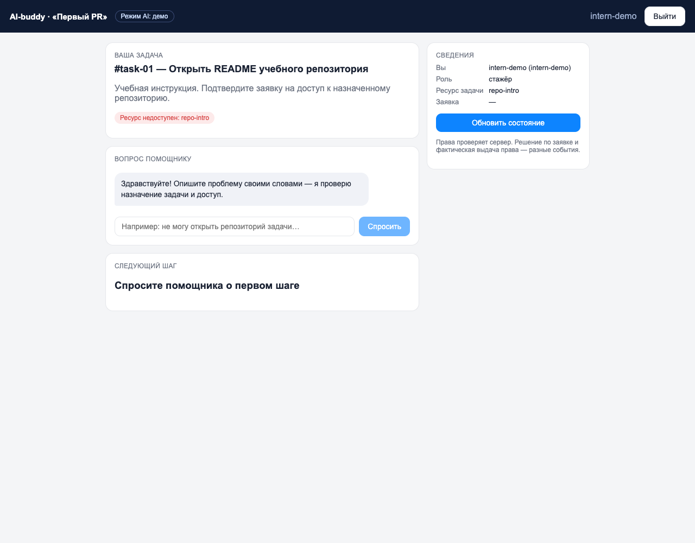
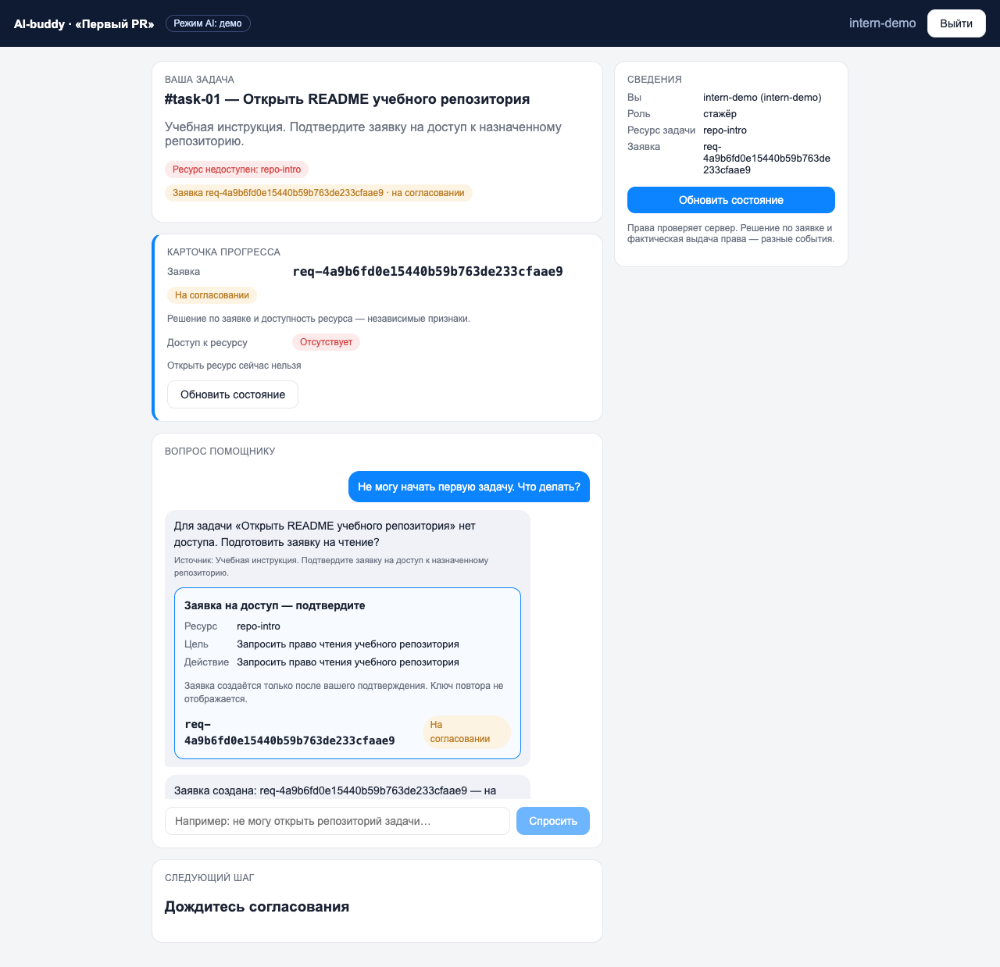
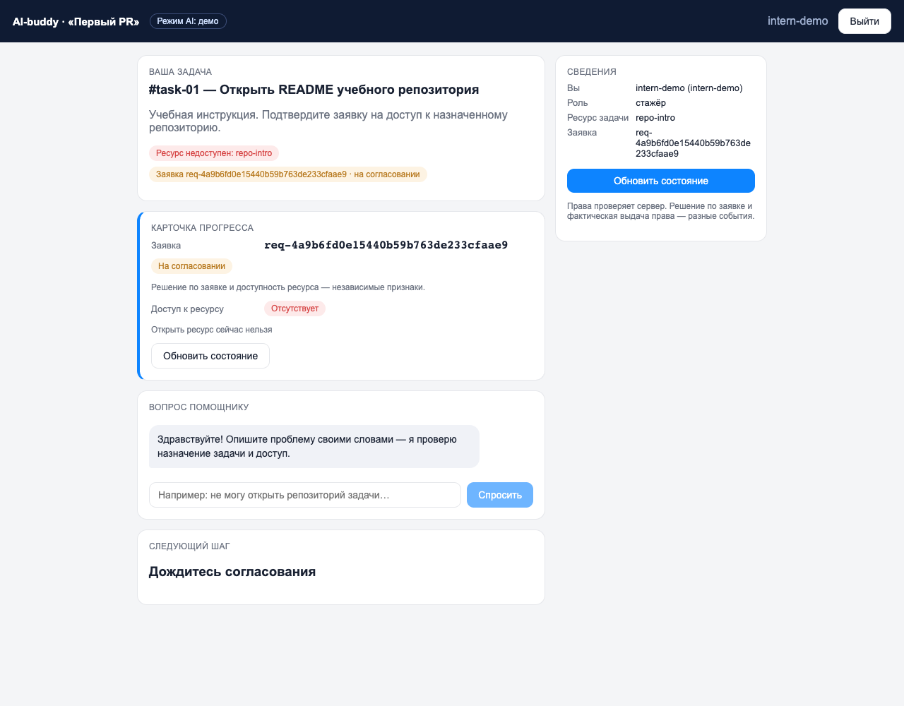
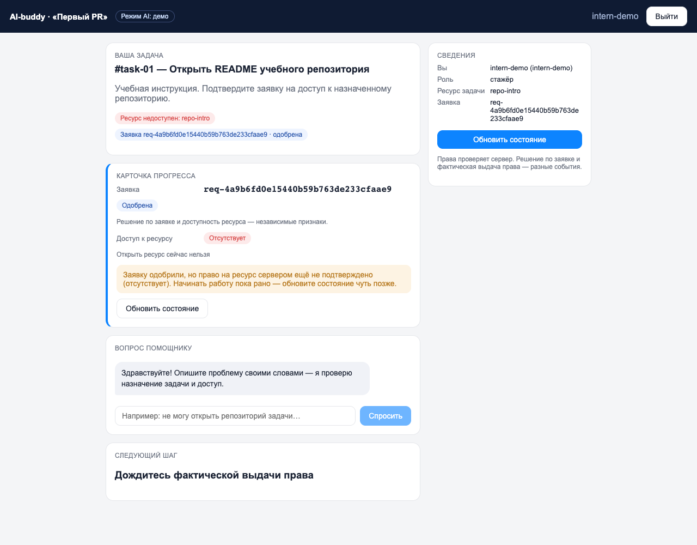
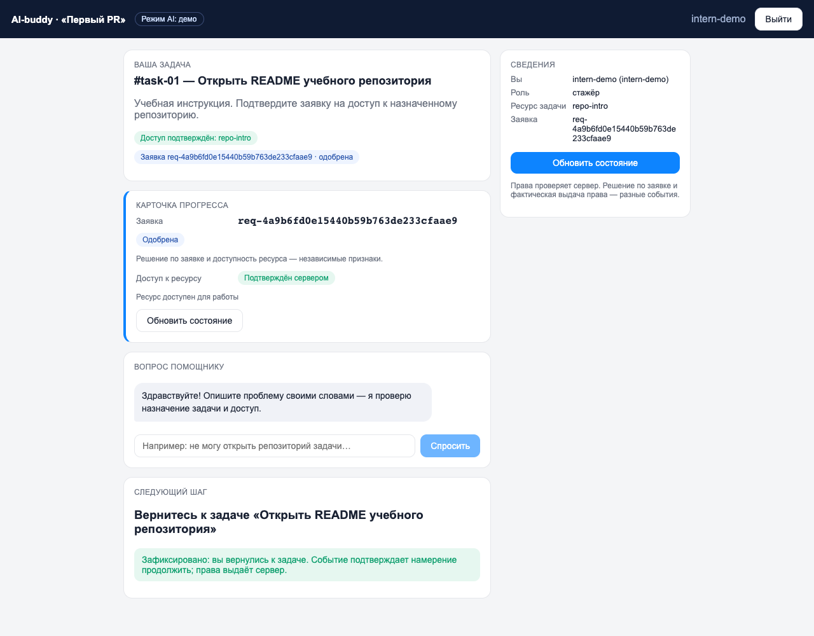

Hack&Change 2026 · кейс Авито
AI-buddy «Первый PR»
ИИ-наставник для стажёра: от «не могу открыть репозиторий первой задачи» — до следующего шага по задаче, через подтверждённую заявку на доступ.
Web 1 · интерфейс и сквозной путь
Web 2 · сервер, права, выпуск
AI · агент и оценка качества
Все данные синтетические. Учебный пример, не регламент Авито.
Проблема
Ситуация стажёра
- Первая задача назначена, но ресурс учебного репозитория не открывается — не хватает права.
- Инструкции, доступы и порядок согласования живут в разных сервисах; новичку неясно, какой шаг следующий и к кому идти.
- Гипотеза команды: повторяющиеся вопросы о доступах задерживают первую задачу и требуют времени наставника.
Подтверждённая потребность
- Кейс Авито (стр. 4–6): занятость наставника 40–48 ч за 6 мес. и 55–65 ч за 9 мес. программы — ориентир всей работы наставника (не экономия от помощника).
- Чек-лист стажёра указан в источниках кейса. Привязку к конкретным пунктам требуется подтвердить после чтения таблицы.
Учебный процесс заявки выбран командой. Его соответствие внутренним правилам Авито предстоит проверить.
Решение
Один сквозной сценарий, доведённый до конца
1Стажёр своими словами описывает проблему в помощнике
2Агент уточняет и проверяет назначение и доступ по фактам сервера
3Предлагает заявку — только после явного подтверждения создаётся заявка с номером
4Заявка переживает перезагрузку: тот же ID после обновления страницы
5Решение ≠ право: после одобрения стажёр видит «ждём выдачу», а не призыв начинать
6Сервер подтвердил право → следующий шаг из задачи и событие возврата к ней
Почему это важно жюри
- Работающий прототип: 49 проверок Python, 36 тестов интерфейса и один браузерный прогон настоящего API прошли.
- Права проверяет только сервер; роль из браузера — не полномочие.
- Режим AI (реальный/демо) всегда виден на экране.
- Ожидание ответа отображается в интерфейсе. Целевой ориентир локального отклика — < 1 с; измерение текущей сборки ещё требуется.
Условия проверок — слайд 9.
Экраны · до заявки
Старт без доступа и живой диалог

1. Старт: задача назначена, доступ к репозиторию отсутствует, разрешённая инструкция под рукой.

2. Свободный вопрос → уточнение → карточка предложения → подтверждение → заявка REQ-2026-0142 «на согласовании».
Экраны · после заявки
Восстановление, ожидание права и следующий шаг

3. После обновления страницы — тот же ID заявки и раздельные признаки решения/доступа.

4. Одобрено, но права нет: объяснение ожидания, кнопки «начать работу» нет.

5. Право подтверждено сервером → шаг из задачи + фиксация возврата.
Роль AI
Что делает агент — и где его границы
Агент (слой AI)
- В деморежиме распознаёт типичные формулировки о первой задаче и доступе; при недостатке контекста уточняет.
- Отвечает из проверенных фактов: назначенная задача, разрешённая инструкция, фактическое право, существующая заявка.
- Выбирает действие: ответ / уточнение / предложение заявки / показ существующей заявки / передача наставнику.
- Контракт поведения — contracts/agent.md. Модуль AI и его SDD ожидают отдельного этапа.
Границы достоверности
- AI не создаёт заявку без подтверждения человеком и не выдаёт права.
- Запись, проверка прав и идемпотентность — на сервере.
- Валидация ответа модели; при сбое провайдера — понятное состояние, без ложного успеха.
- Изменение фактического права выполняет авторизованный серверный сервис.
Безопасность
Проверка прав и работа с данными
Права — на сервере
- Сессия выдаётся сервером; роль из браузера не принимается.
- effectiveAccess — независимая проверка права, включая «неизвестно».
- requestStatus — решение по заявке; отдельное событие.
Идемпотентность
- Подтверждение шлёт ID предложения + ключ повтора.
- Две попытки → одна заявка, один ID (покрыто тестами UI и сервера).
- Сетевой сбой → сначала восстановление серверного состояния.
Данные
- Только синтетические/обезличенные данные.
- Недоступные сведения не приходят в ответе — нечему «случайно» показаться.
- Ключи и секреты не показываются и не логируются.
Честность демонстрации
Граница имитации
| Слой | Сейчас (прототип) | Замена при внедрении |
|---|
| Веб-клиент | реально React+TS, 36 тестов; вход через cookie | — (готов) |
| Сквозной путь | реально Playwright + Chrome, полный путь через HTTP API | — (готов) |
| API / права | реально Flask API, PostgreSQL, сессии и проверка прав | Адаптер корпоративной авторизации и сервисов |
| Согласование | имитация панель демооператора | Корпоративный сервис согласования и выдачи прав |
| LLM | деморежим детерминированный серверный адаптер, режим подписан на экране | LLM-провайдер с валидацией (AI, A4) |
Режим AI всегда виден в интерфейсе (бейдж в шапке). Имитации переключаются переменной окружения без изменения кода экранов.
Доказательство
Проверено прогонами
49 + 36
проверок Python и тестов интерфейса прошли
1 / 1
браузерный путь на реальных Flask API и PostgreSQL, включая отдельную сессию оператора
88,48%
покрытие строк доступного кода: 699 из 790. После подключения AI процент будет пересчитан
- Проверка тестов и покрытия: python scripts/check.py.
- Отчёт и условия воспроизведения: docs/qa/integration.md.
macOS, Node 24, Python 3.12, PostgreSQL 16.2, Chrome/Playwright. Данные синтетические, AI в деморежиме. Запуск Docker ещё предстоит проверить.
Внедрение
Путь в инфраструктуру Авито
Совместимость со стеком
- Фронтенд: React + TypeScript — как в стеке Авито.
- Сервер прототипа: Flask + PostgreSQL (допустим в стеке Авито); прод-контур: Go + PostgreSQL/Redis.
- Docker Compose, healthcheck, .env.example (Web 2, B6).
- Действия через MCP-инструменты; события — в аналитику Авито.
Что заменяют адаптеры
- Тестовый вход → SSO/авторизация Авито.
- Сервис заявок → система согласований (одобрение и выдача права — существующие корпоративные шаги).
- Демооператор → роль руководителя/наставника.
- LLM-провайдер → внутренняя модель Авито.
Интеграционная схема вызовов — docs/integration.md (Web 2, B5); слайд отражает план Web 1.
Пилот
Как проверим пользу (гипотезы и способ проверки)
| Метрика | Что меряем | Способ проверки |
|---|
| Время до корректной заявки | от первого вопроса до подтверждённой заявки | события в пилоте: AI-buddy vs обычный процесс (формулы — A6) |
| Ожидание после заявки | от создания заявки до фактической выдачи права | создание заявки фиксируется; событие фактической выдачи требуется добавить для пилота |
| Рутинные обращения к наставнику | число вопросов «дай доступ» за период | опрос наставников до/после, дневники 1:1 |
| Возврат к задаче | доля стажёров, вернувшихся к задаче после выдачи права | событие task_link_opened уже фиксируется прототипом |
Все цифры пилота — план (гипотезы), не измерения. Ориентиры 40–48 ч / 55–65 ч — вся работа наставника из кейса, не приравниваем к экономии. Формулы, знаменатели и схема пилота ожидают отдельной проработки.
Команда
Один зафиксированный прогон на троих
Web 1 · интерфейс
Путь стажёра, диалог и подтверждение, восстановление заявки, сквозные тесты, презентация и видео.
Web 2 · сервер и выпуск
Контракт, сессии и права, идемпотентные заявки, демоинструмент оператора, Docker и сдача.
AI · агент
SDD и источники, оркестрация диалога, LLM-провайдер и деморежим, оценка качества, метрики пилота.
Репозиторий: https://github.com/Zakatu2000/avito-hack · ветка integration/web1-server · сквозной прогон — по README.
Демо: Web 1 проходит путь стажёра, Web 2 одобряет и выдаёт право из отдельной сессии, AI объясняет, какие факты изменили ответ.